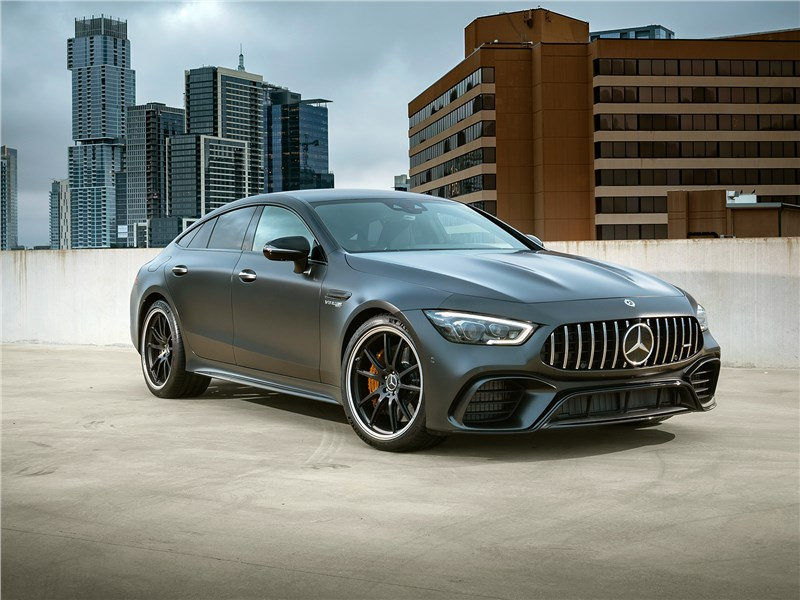
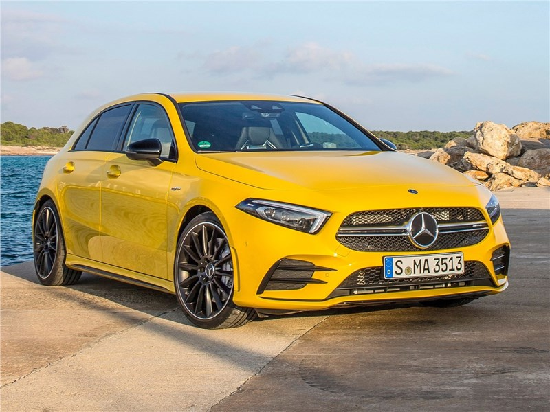

Модельный ряд
Легковые автомобили
По состоянию на начало 2017 года под торговой маркой Mercedes-Benz выпускаются следующие автомобили:
Значимые автомобили
Концепт-кары
- Mercedes-Benz C111 — серия экспериментальных спорткаров с плавником на корме.
- Mercedes-Benz Auto 2000 — экспериментальный экономичный 4-дверный седан, представленный на Франкфуртском автосалоне в 1981 году.
- Mercedes-Benz NAFA — концептуальный городской микроавтомобиль.
- Mercedes-Benz C112 — концептуальный спорткар, ставший прототипом для отработки электронных технологий.
- Mercedes-Benz F100 — концептуальный минивэн, представленный в 1991 году.
- Mercedes-Benz F200 Imagination — 2-дверное купе, представленное в 1996 на Парижском автосалоне.
- Mercedes-Benz F300 Life Jet — 3-колёсный автомобиль/мотоцикл, показанный в 1997 году на Франкфуртском автосалоне.
- Mercedes-Benz Vario Research Car — 4 автомобиля в одном.
- Mercedes-Benz Vision SLR — прототип Mercedes-Benz SLR McLaren, представленный в 1999 году на Североамериканском автосалоне.
- Mercedes-Benz Vision SLA — открытая версия Vision SLR, показанная в 2000 на Североамериканском автосалоне.
- Mercedes-Benz F400 Carving — 2-местный родстер, показанный в 2002 на Токийском автосалоне.
- Mercedes-Benz Vision GST — минивэн, прототип R-класса, представленный в 2002 на Североамериканском автосалоне.
- Mercedes-Benz F500 Mind — 4-дверный седан, представленный в 2003 году на Токийском автосалоне.
- Mercedes-Benz F600 Hygenius — компактный автомобиль 2005 года на топливных элементах.
- Mercedes-Benz Bionic — автомобиль с низким коэффициентом аэродинамического сопротивления, показанный в 2005 на симпозиуме инноваций DaimlerChrysler в Вашингтоне, в основу дизайна которого легла тропическая рыбка.
- Mercedes-Benz Ocean Drive — 4-дверный кабриолет на базе S600.
- Mercedes-Benz F700 — большой престижный 4-местный седан с экспериментальным экономичным бензино-дизельным двигателем.
- Mercedes-Benz Vision GLK — прототип GLK-класса с двигателем BlueTEC.
- Mercedes-Benz ConceptFASCINATION — трёхдверный концептуальный универсал (Shooting Brake).
- Mercedes-Benz BlueZERO — серия из трёх концепт-каров (BlueZero E-Cell, BlueZero E-Plus Cell и BlueZero F-Cell), отражающая подход марки к экологически чистым автомобилям, представленная в 2009 году.
- Mercedes-Benz F-Cell Roadster — концепт-кар по мотивам Benz Patent-Motorwagen 1886 года.
- Mercedes-Benz ESF 2009 — экспериментальный автомобиль повышенной безопасности, построенный на базе Mercedes-Benz S400 Hybrid.
- Mercedes-Benz F800 Style — концепт, представляющий нити развития «экологичного Мерседеса» — дизельный гибрид и с водородной установкой.
- Mercedes-Benz AMG Vision Gran Turismo — концепт спорткара из игры Gran Turismo 6.
- Mercedes-Benz F125! — концепт, представленный к 125-летию марки Mercedes-Benz.
- Mercedes-Benz Concept IAA — автомобиль с повышенной аэродинамической эффективностью, представленный в 2015 году.
- Mercedes-Maybach Vision 6 — первый концептуальный роскошный электрокар в кузове купе от восстановленного бренда Maybach.
- Vision Urbanetic Mercedes-Benz — универсальная четырёхколёсная платформа с беспилотным управлением и электрической двигательной установкой.
